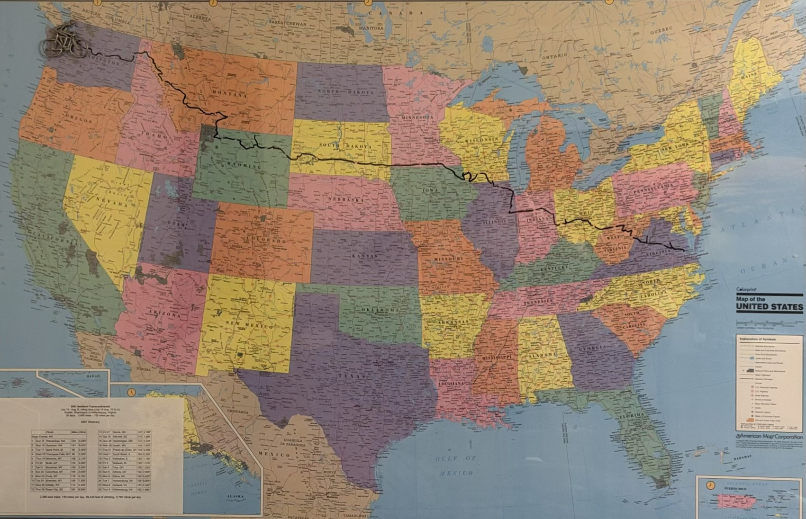

Before the marathons, there was a bike ride across the entire country — Everett, Washington to Williamsburg, Virginia, self-supported, one pedal stroke at a time.
← Back to the 777 Challenge
Starting in Everett, Washington, the route ran east across Washington, the Idaho panhandle, Montana, and Wyoming, through South Dakota and southern Minnesota, across Wisconsin, Illinois, Indiana, Ohio, West Virginia, and into Virginia — finishing in Williamsburg. Roughly 130 miles a day, every day, for 26 days straight.
Transcribed from the original hand-annotated wall map (see photo above). Dates are 2001.
| Day | Date | Finish | Miles | Climb |
|---|---|---|---|---|
| — | — | Start: Everett, WA | — | — |
| 1 | Sun 7/15 | Wenatchee, WA | 124 | 5,880' |
| 2 | Mon 7/16 | Spokane, WA | 161 | 8,420' |
| 3 | Tue 7/17 | Sandpoint, ID | 80 | 2,300' |
| 4 | Wed 7/18 | Thompson Falls, MT | 80 | 2,300' |
| 5 | Thu 7/19 | Missoula, MT | 108 | 3,120' |
| 6 | Fri 7/20 | Butte, MT | 134 | 4,850' |
| 7 | Sat 7/21 | Bozeman, MT | 108 | 1,200' |
| 8 | Sun 7/22 | Columbus, MT | 108 | 3,500' |
| 9 | Mon 7/23 | Cody, WY | 118 | 3,100' |
| 10 | Tue 7/24 | Sheridan, WY | 180 | 7,300' |
| 11 | Wed 7/25 | Gillette, WY | 114 | 4,400' |
| 12 | Thu 7/26 | Rapid City, SD | 180 | 6,300' |
| 13 | Fri 7/27 | Mobridge, SD | 147 | 3,180' |
| 14 | Sat 7/28 | Mitchell, SD | 143 | 1,690' |
| 15 | Sun 7/29 | Worthington, MN | 137 | 2,240' |
| 16 | Mon 7/30 | Austin, MN | 144 | 1,430' |
| 17 | Tue 7/31 | Prairie du Chien, WI | 149 | 3,200' |
| 18 | Wed 8/1 | South Beloit, IL | 150 | 1,200' |
| 19 | Thu 8/2 | Kankakee, IL | 163 | 1,150' |
| 20 | Fri 8/3 | Wabash, IN | 138 | 1,010' |
| 21 | Sat 8/4 | Troy, OH | 138 | 1,030' |
| 22 | Sun 8/5 | Athens, OH | 162 | 2,900' |
| 23 | Mon 8/6 | Elkins, WV | 149 | 8,600' |
| 24 | Tue 8/7 | Harrisonburg, VA | 108 | 6,000' |
| 25 | Wed 8/8 | Ashland, VA | 121 | 4,500' |
| 26 | Thu 8/9 | Williamsburg, VA | 102 | 1,080' |
⚠ These day-by-day figures are transcribed from a photo of the original hand-marked wall map — small errors are likely. Get in touch if you've got the exact splits and want this corrected.